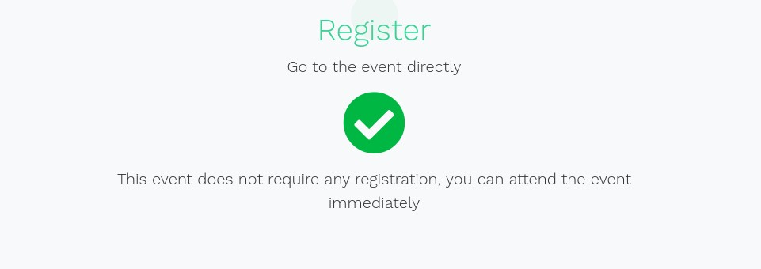
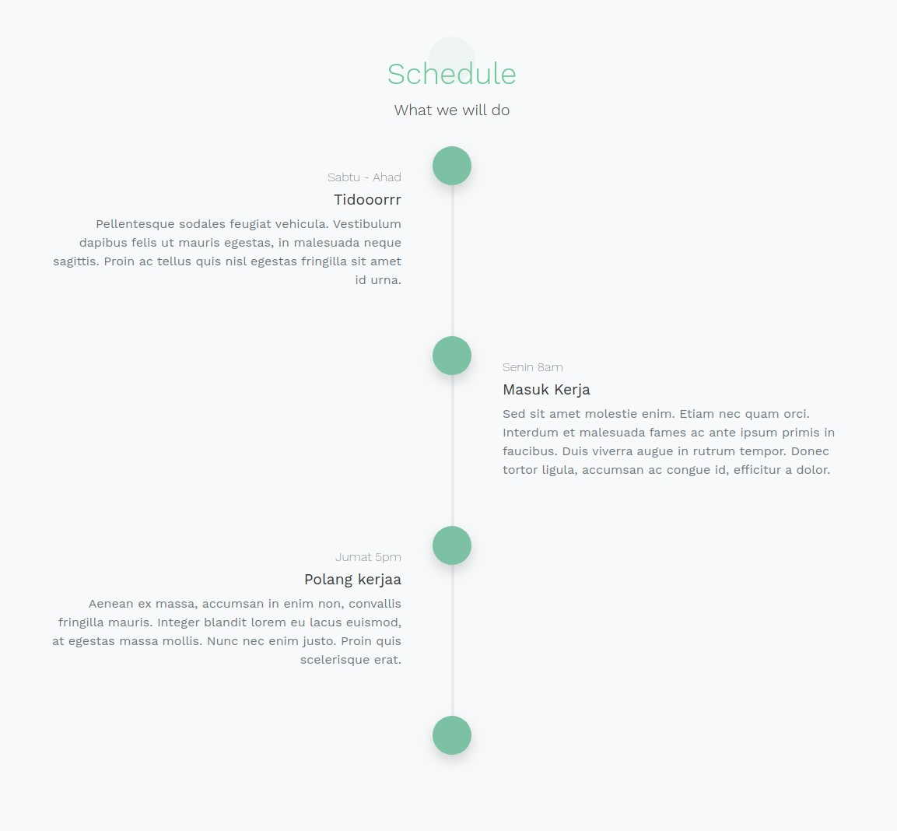
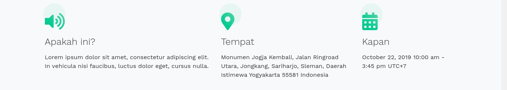
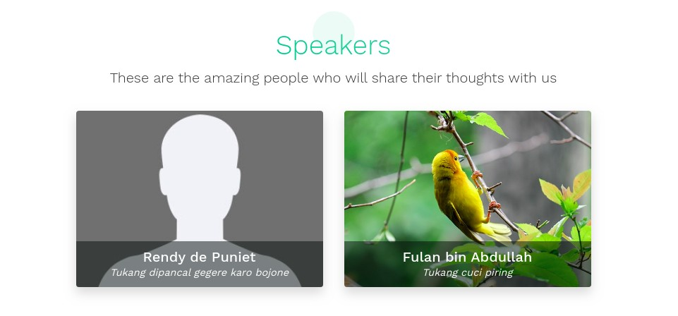
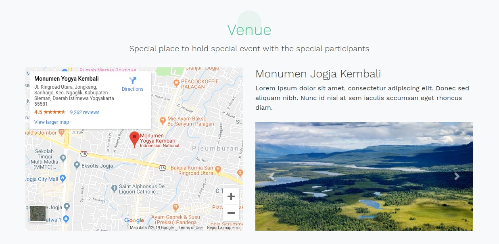
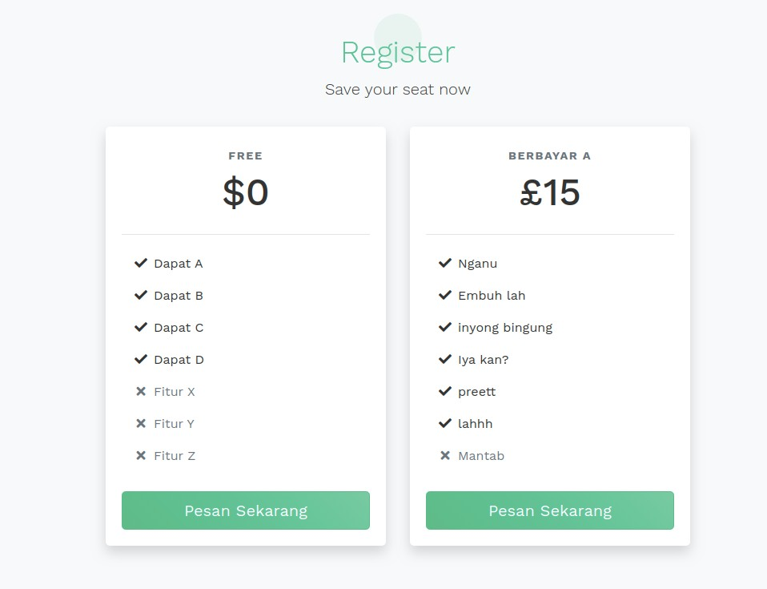

Created: 29/9/2019
By: Rendy
Email: rendy.de.p@gmail.com
Thank you for purchasing Wacara Event Organizer. If you have any questions that are beyond the scope of this help file, please feel free to email via my user page contact form here. Thank you so much!
Wacara Event Organizer is a WordPress theme to create and manage events on the fly.
With Wacara you can create both paid and free event, and it uses Stripe for the payment gateway.
Before installing the theme, make sure you have Stripe account to be used as the payment gateway.
To install the theme, as simple as below:
Your theme is installed, but before creating an event, there are some steps that you need to complete first to get the most of the theme.
When you are creating an event, there are bunch of configurations you can play with. Basically, they are separated into three different metaboxes, Detail, Schedule, and Design.
In this metabox we will separate into three different tabs, General, Rules, and Fields.
This tab contains few fields that will be explained below.
Countdown section in header.
This tab only contains one main field, that is Allow register, if you check this option you will allow the user to register to your event. In another hand, if you uncheck this option you will not allow user to register to your event. This option will useful if you are organizing free public event which does not require any registration. Moreover, if you activate the Allow register, it will produce one more field that's called Limit register. Just like its name, the field will add more flexibility to the event whether you want to create an event with limited seats or limited registration time. Currently we can limit the registration by two fields, By registrant, and By date.
Registration section if the event does not allow registration.
In this tab you can configure the fields of your event's registration form.
Basically, every field has three options, whether include the field on the registration form or not, set the field as mandatory, and set the label of the field. But there are two fields that you can not exclude the field and its mandatory function, they are Email and Name.
You can display the information of the event's rundown from the start until the finish. You can add as many timeline as you desire, and each timeline has three fields, they are Period, Title, and Content.
Sample of schedule section
This metabox has eight different tabs, mostly they are representing the layout of the event's landing page. Those tabs are General, About section, Speakers section, Venue section, Gallery section, Sponsors section, Schedule section, and Pricing section.
This tab contains four fields that will be explained below.
Design editor for general tab
Before we moving further, next part we will walk through the available options for each sections. And all of them have three common fields, they are:
Sample nav bar of the event
Except the common fields we have mentioned above, this tab has one more field which is Description. You can write a short description about the event and it will be displayed in about section alongside date information and location information.
Sample about section
This tab also has one more field, which is Speakers, where you can select lists of speakers that you have created before. For more detail about speakers, please refer to this section
Sample of speakers section
Just like two tabs above, this tab also has one field which is Location, where you can select one location you have created before. To learn more about location please refer to this section
Sample of location section
This tab also has one field called Gallery, where you can put bunch of images related to the event, you can select any images.
This tab exactly 90% is identical with last tab above, only contain one field for image lists, the only different is the name of the field, which is called Sponsors. This field is used to display list of sponsor logos.
This tab does not have any field except three common fields above. This tab has its own metabox instead, the metabox called Schedule
Last but not least, this tab has major role related to the registration. This tab has one field called Pricing, which is a list of package/tier of the registration. You can select lists of pricing that you have created before. To learn more about pricing, please refer to this section
Sample of pricing section
I've used the following images, icons or other files as listed.
Once again, thank you so much for purchasing this theme. As I said at the beginning, I'd be glad to help you if you have any questions relating to this theme. No guarantees, but I'll do my best to assist. If you have a more general question relating to the themes on ThemeForest, you might consider visiting the forums and asking your question in the "Item Discussion" section.
Rendy